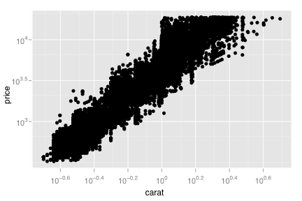
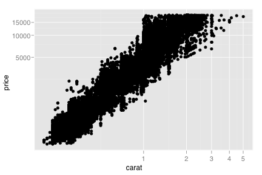
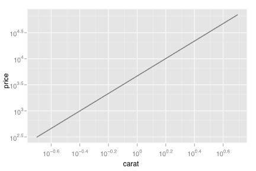
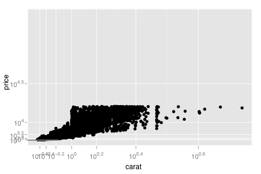
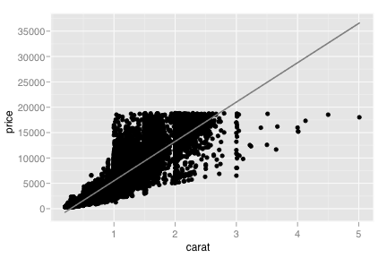

coord_trans
Transformed cartesian coordinate system
Details
The Cartesian coordinate system is the most familiar, and common, type of coordinate system. There are no options to modify, and it is used by default, so you shouldn't need to call it explicitly
See layer and qplot for more information on creating a complete plot from multiple components.
Examples
> qplot(log10(carat), log10(price), data=diamonds)> # * by transforming the scales > qplot(carat, price, data=diamonds, log="xy")  > qplot(carat, price, data=diamonds) + scale_x_log10() + scale_y_log10() > # * by transforming the coordinate system: > qplot(carat, price, data=diamonds) + coord_trans(x="log10", y="log10")  > > # The difference between transforming the scales and > # transforming the coordinate system is that scale > # transformation occurs BEFORE statistics, and coordinate > # transformation afterwards. Coordinate transformation also > # changes the shape of geoms: > qplot(carat, price, data=diamonds, log="xy", geom="smooth", method="lm")  > qplot(carat, price, data=diamonds, geom="smooth", method="lm") + coord_trans(x="log10", y="log10")
> > # With a combination of scale and coordinate transformation, it's > # possible to do back-transformations: > qplot(carat, price, data=diamonds, log="xy", geom=c("point", "smooth"), method="lm") + coord_trans(x="pow10", y="pow10")  > # cf. > qplot(carat, price, data=diamonds, geom=c("point", "smooth"), method="lm")  src "\n"